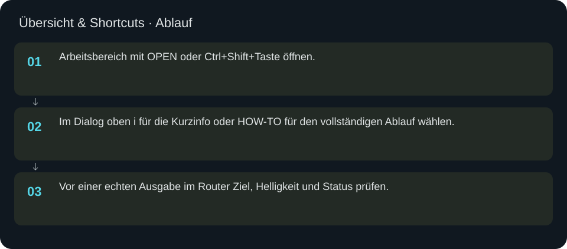
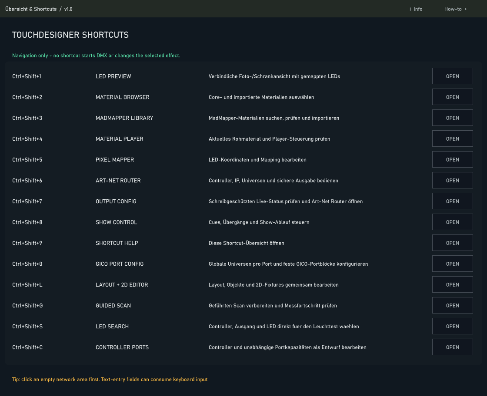

Übersicht & Shortcuts
Der Einstieg in Material, Scan, Layout, Routing und Show. OPEN öffnet den jeweiligen Dialog.
In welcher Reihenfolge?
- Arbeitsbereich mit OPEN oder Ctrl+Shift+Taste öffnen.
- Im Dialog oben i für die Kurzinfo oder HOW-TO für den vollständigen Ablauf wählen.
- Vor einer echten Ausgabe im Router Ziel, Helligkeit und Status prüfen.


Schritt für Schritt
Direkte Wege
Ctrl+Shift+1 LED-Vorschau · 2 Materialien · 3 Bibliothek · 4 Player · 5 Pixel Mapper · 6 Art-Net Router · 7 Output-Status · 8 Show · 9 Übersicht · 0 GICO-Ports · L Layout · G Scan · S LED-Suche · C Controller/Ports. Tastenkürzel greifen in TouchDesigner; ein fokussiertes Eingabefeld kann Tasten abfangen. Einmal in eine freie Fläche klicken.
Beispielablauf
Material mit Ctrl+Shift+2 auswählen, mit Ctrl+Shift+1 auf den Schrank prüfen, über Ctrl+Shift+8 eine Cue erstellen und speichern. Router und Controller-Ports öffnen eigene Ansichten; Navigation startet keine LED-Ausgabe.
Eingaben & Beispiele
Dieser Bildschirm benötigt für den beschriebenen Prüfablauf keine Texteingabe.
Woran erkenne ich Erfolg?
Die erwartete Ansicht öffnet, Status und Vorschau entsprechen der gewählten Aktion, und es erscheint kein Fehler. Änderungen beim nächsten Laden beziehungsweise im Live-Status erneut lesen. Ein erfolgreicher Bildschirmtest beweist weder physische LED-Ausgabe noch korrekte Kameramessung.
Quellennachweis
Dateipfade im Projekt-Repository; die Onlinehilfe gibt keinen allgemeinen Dateisystemzugriff frei.
pixelblaze_mapper/shortcut_hub.pypixelblaze_mapper/build_shortcut_hub.py
Dialog: /project1/shortcut_hub/help_panel